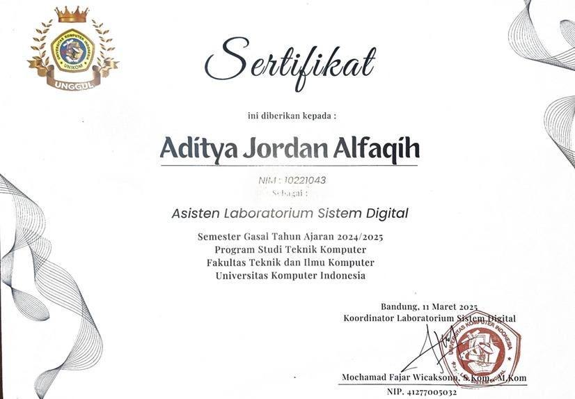
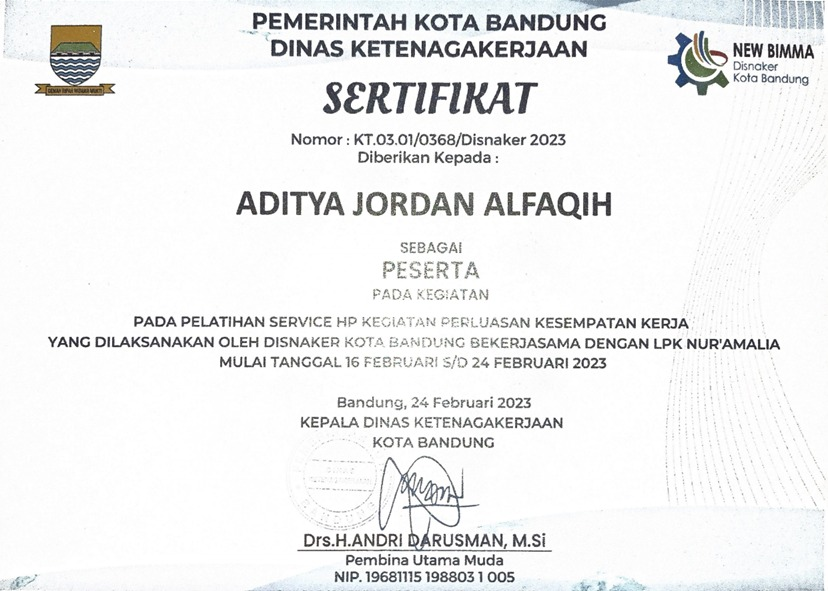
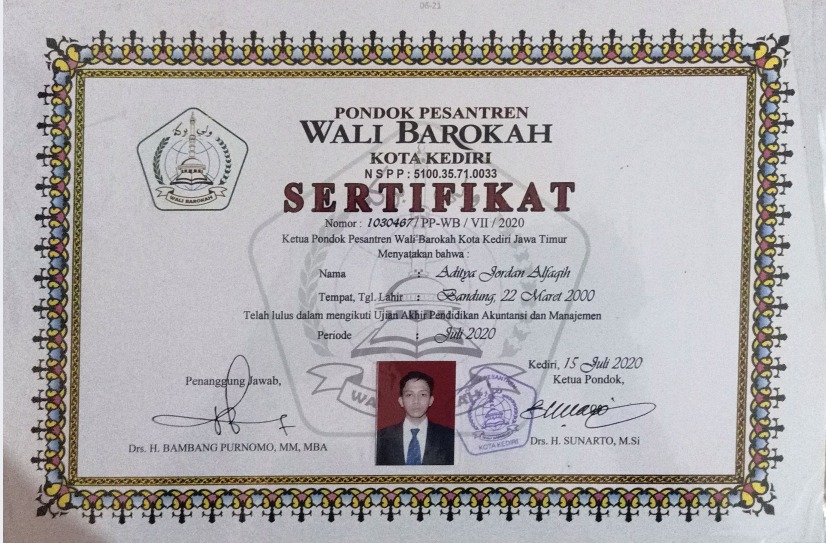
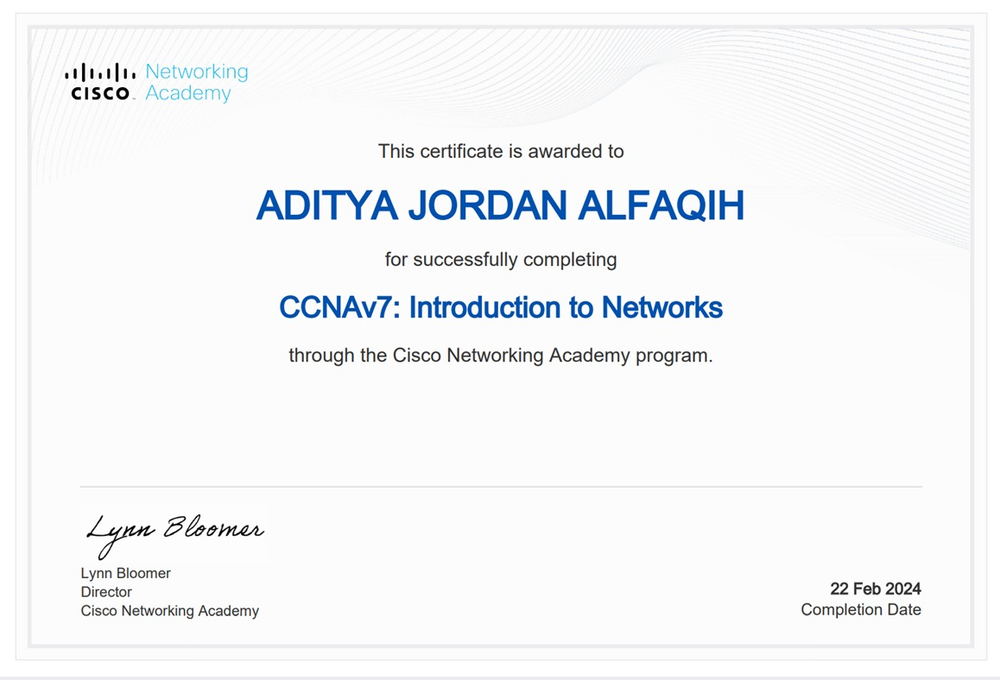
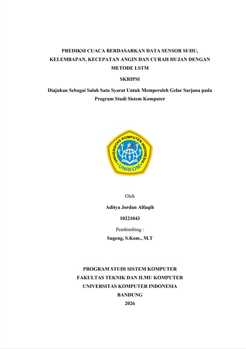

Saya merupakan lulusan S1 Sistem Komputer dari Universitas Komputer Indonesia yang memiliki minat besar pada bidang pengolahan data, kecerdasan buatan, dan pengembangan sistem berbasis teknologi. Selama masa studi, saya terbiasa bekerja dengan bahasa pemrograman seperti Python serta memiliki pengalaman dalam pengolahan data sensor dan pengembangan model prediksi. Sebagai fresh graduate, saya memiliki semangat belajar yang tinggi, mampu bekerja secara mandiri maupun dalam tim, serta siap menghadapi tantangan di dunia kerja untuk terus berkembang dan memberikan kontribusi terbaik.
Lulusan
Computer System Engineering
Alamat
Jl. Pajajaran dlm Selatan No. 198/72
Spesialisasi
Machine Learning, Internet Of Things (IOT), Computer Networking and Software Engineering
Lulusan S1 Sistem Komputer dari Universitas Komputer Indonesia dengan fokus pada pengolahan data dan kecerdasan buatan. Memiliki kompetensi teknis dalam pemrograman Python, analisis data, serta pengembangan model machine learning berbasis data sensor. Berpengalaman dalam membangun model prediksi menggunakan metode LSTM dengan memanfaatkan data seperti suhu, kelembaban, kecepatan angin, dan curah hujan.
Memahami proses preprocessing data, normalisasi, serta evaluasi model menggunakan metrik seperti MAE dan RMSE. Memiliki pengalaman dalam implementasi model ke dalam aplikasi berbasis GUI seperti Tkinter dan Streamlit. Terbiasa bekerja secara analitis, teliti, dan adaptif terhadap teknologi baru, serta mampu bekerja secara mandiri maupun dalam tim untuk menghasilkan solusi berbasis data yang efektif.
Perancangan & Impelementasi model Machine Learning
Automasi & Perancangan Perangkat berbasis Micro Controller
Perancangan Jaringan Komputer
Pengembangan Perangkat Lunak
Programming Language
Dapat memanfaatkan untuk Machine Learning Development, Internet Of Things, Data Analysis and Software Engineering
Micro Controller & Integrated Development Environment (IDE)
Mengembangkan perangkat cerdas berbasis IOT dan automasi perangkat
Web Backend Programming Language
Pemrograman web untuk kebutuhan pengembangan API dan Backend
Printed Circuit Board (PCB) Design Software
Mampu membuat dan merancang Printed Circuit Board (PCB)
Networking Simulator, Design & Tracing Software
Akses konektifitas jaringan, keamanan, ketersediaan, menyediakan IP Services, Routing & Switching dan Wireless LAN
Dokumentasi partisipasi kegiatan industri, seminar akademik, sertifikasi profesional, serta pengalaman organisasi di bidang komputer jaringan, pendidikan dan sistem komputer.

Berperan sebagai asisten laboratorium pada mata praktikum Sistem Digital di Universitas Komputer Indonesia. Bertanggung jawab membantu proses pembelajaran praktikum, membimbing mahasiswa, serta memastikan pelaksanaan praktikum berjalan dengan baik. Pengalaman ini meningkatkan kemampuan komunikasi, pemahaman konsep sistem digital, serta kerja tim.

Mengikuti pelatihan teknis perbaikan perangkat handphone yang diselenggarakan oleh Dinas Ketenagakerjaan Kota Bandung. Memperoleh pemahaman mengenai diagnosa kerusakan, perbaikan hardware, serta dasar troubleshooting perangkat elektronik. Pengalaman ini memperkuat keterampilan teknis dan problem solving di bidang perangkat keras.

Telah menyelesaikan pendidikan di Pondok Pesantren Wali Barokah dengan fokus pada bidang akuntansi dan manajemen. Pengalaman ini membentuk karakter disiplin, tanggung jawab, serta kemampuan manajemen dasar yang mendukung pengembangan diri secara profesional.

Menyelesaikan program CCNAv7: Introduction to Networks dari Cisco Networking Academy. Mempelajari dasar-dasar jaringan komputer seperti konfigurasi jaringan, IP addressing, routing, switching, serta konsep keamanan jaringan. Sertifikasi ini menunjukkan pemahaman fundamental dalam bidang networking.
Total 4 Sertifikat telah diperoleh
Kumpulan proyek yang telah saya kerjakan

Worked Collaboratively within Assembly Process from Electric Golfcar
Total 1 Proyek telah berhasil diselesaikan
Saya terbuka untuk peluang karir, proyek kolaborasi, atau diskusi tentang sistem komputer, machine learning, software dan jaringan komputer
Aditya Jordan Alfaqih
Computer System Engineering
Jl. Pajajaran dlm Selatan No. 198/72
adityajordan6@gmail.com
085795128880
Unduh CV lengkap saya untuk informasi lebih detail tentang pendidikan, pengalaman proyek, dan keterampilan teknis yang saya miliki.
Format PDF - Terbaru
CV ini berisi informasi lengkap tentang latar belakang pendidikan, pengalaman proyek di bidang machine learning, jaringan komputer, software engineering, IOT dan pencapaian saya.
Download CV (PDF)Jika Anda ingin berdiskusi tentang peluang kerja, proyek kolaborasi, atau konsultasi teknik, silakan hubungi saya melalui email atau WhatsApp.